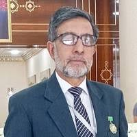

Prof. Naseem
Ahmad Shah
CEOProf. Naseem Ahmad Shah is a distinguished academic, scholar, and former Dean of the School of Social Sciences at the University of Kashmir. A Professor of Islamic Studies, he holds postgraduate degrees in Arabic and Islamic Studies from Aligarh Muslim University and a Ph.D. in Islamic Studies from the University of Kashmir, with research focused particularly on Islamic civilization and Central Asian history.
His academic career includes teaching, research supervision, institutional leadership and senior administrative responsibilities at the University of Kashmir, including serving as Professor and Director of the Institute of Islamic Studies and Provost of the University’s hostels. He has represented the University in international academic forums and contributed extensively to scholarship in Islamic civilization, Central Asian history, Arabic and Persian studies, comparative religion and social sciences.